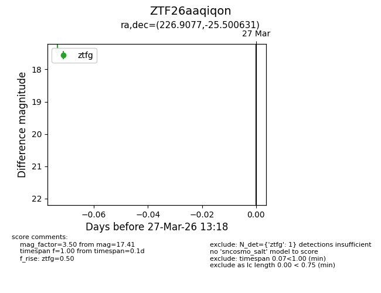
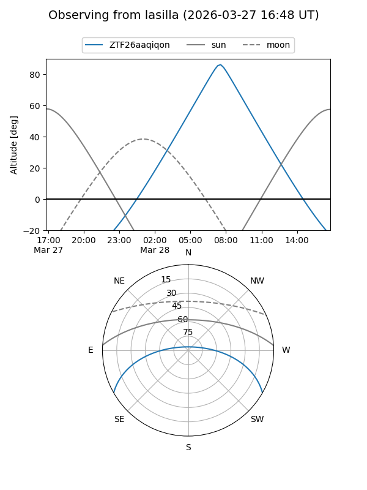
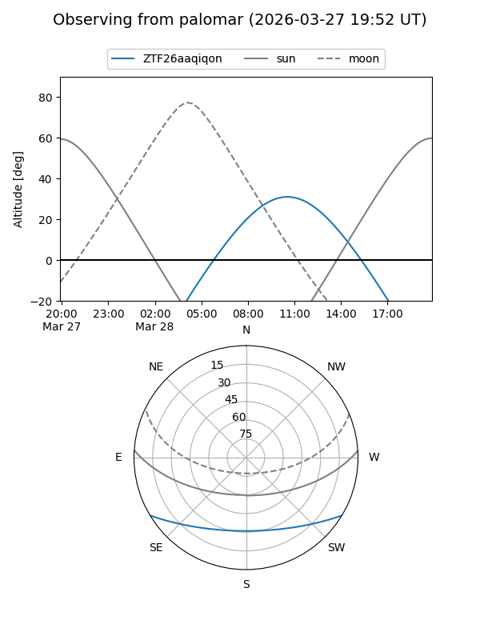

ZTF26aaqiqon
Target ZTF26aaqiqon at 2026-03-27 13:20
Aliases and brokers:
FINK: link
Lasair: link
ALeRCE: link
alt names
ZTF26aaqiqon (ztf,fink_ztf)
Coordinates:
equatorial (ra, dec) = 226.9077,-25.50063
equatorial (HMS+DMS) = 15:07:37.85,-25:30:02.27
galactic (l, b) = (337.8405,+27.98661)
Flags:
Photometry:
last ztfg=17.41
1 ztfg detections
Lightcurve

Visibility


Additional plots